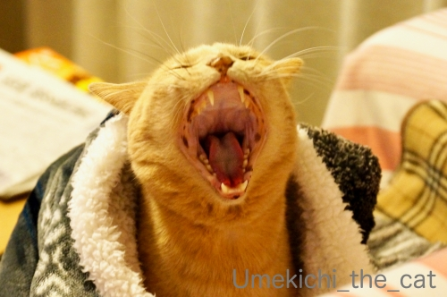

王様のガウン [梅吉]

寝起きの梅吉さん。
ブランケットがまるで王様のガウンの様！

お口の周りが「もわっ」と盛り上がったと思ったら



王様の豪快なあくびです。
キング・オブ・アクビー！？

この状態でしばしぼーっとしてましたw
梅吉はぷーすかいびきはかきますが寝言は聞いたことがありません。
先代猫はよく眠りながら「うにゃにゃにゃ・・・」って言っていたのですが。
みなさんのおうちの子、寝言言いますか？
先日奈良県は北葛城にある王寺町の明神山に行ってきました。
明神山は標高274m、ハイキングコースのように気軽の登れる山でありながら
「関西一円を360度のパノラマで眺めることができる！」と
町をあげて売り出し中の山なのです。
王寺町渾身の明神山紹介サイトはこちらです＾＾
王寺町は聖徳太子の愛犬だった雪丸が町の公式マスコット。
JR王寺駅の通路の壁に早速雪丸を発見。
駅から登山道入り口まではバスで向かいます（15分くらい）。
明神山の登り口近くにも大きな雪丸像が立ってました。
明神山の山頂には神社があり登山道＝参道です。
住宅地の真ん中にそびえる鳥居。
この坂道をのぼって山の道へ向かいます。
この坂がきついのよー。
登山道は舗装された道が続いて歩きやすいです。
登山口鳥居付近から山道に入るあたり＆登り始めの数百メートルの傾斜が一番きつく
山頂まで1000メートルと書かれた看板あたりからゆるやかな登り坂へと変わります。
この時点で足が結構やられてました(ｰ ｰ;)
時々木立の間から見える奈良盆地の景色が綺麗！
私たちは30分くらいで登頂。
山頂にある水神社（祭神は水波咩命）に参拝をすませて展望デッキへ向かいます。
どーです！？この素晴らしい眺め！！
・・・と言いたいところなんですがこの日はちょっとガスっていてあたりは白い(⌒-⌒;
展望デッキには「この方向にはこんなものが見えますよ」と
親切な説明書きがあるのですがよく見えない＆よくわからなーいw
西の方、大阪方面の方が少しだけ眺めが良かったかな。
自分の暮らす街なので多少土地勘もありランドマーク的なものはなんとかわかりました。
晴れていればこの風景の奥に淡路島と明石海峡大橋も見えるはずなんですよ・・・・・
見晴らしの良さそうな日に、とリベンジを誓って山を降りました。
下りは20分もかからずに下山。
この登山道途中に「いのしし出没注意」の看板あるのですが・・・・
どうやら過去にやっちゃったいのししさんがいらっしゃるようでw
足についたセメント、ちゃんと落ちたかしら(*>艸<)
帰りのバスから「飛び出し坊や」の雪丸バージョンを発見！！
お出迎えからお見送りまで雪丸ざんまいの明神山、王寺町でした。
最近低山登山をしているのは・・・・・
来年には三輪山に登りたいなぁと思っているからなのです。
「呼ばれないと登れない」神体山、呼んでいただけるようにまずは体力つけなくちゃね、
と思っているのであります。。。
2019-12-16 00:00
nice!(75)
コメント(23)

カフェオレ色の梅吉

梅吉 2023年8月10日 永眠


梅吉と出会った譲渡会

犬猫の理由なき殺処分ゼロ
妄想広告
UMEKICHI 光

爆発的に早い！
時々攻撃的！
Thanks to Mr.Boss365
爆発的に早い！
時々攻撃的！
Thanks to Mr.Boss365

ほんと梅吉さんガウン着てるみたいですね♪
そりゃそんな温かそうなの着てたら眠くなるのも仕方ない・・・
明神山は電車＆バスで行かれたのですね☆
ＪＲ王寺駅改札の雪丸は見当たりませんがバス停近くの雪丸はしっかりと！
やっぱりコイツはスルー出来なかった模様です(~_~)
う～ん、山頂ガスっててちょっと残念。
なので金剛山・葛城山・二上山が見えないだけでなく、
誓いのテラスでの記念撮影もガスってたんですね(笑)
お疲れ様でした～♪
私も三輪山は一度登ってみたいと思っています(^_-)-☆
by yamatonosuke (2019-12-16 01:30)
梅吉さん王様のアクビーに認定ですね。
聖徳太子に愛犬がいたなんで知らなかったー。
by zombiekong (2019-12-16 01:49)
梅吉君、貫禄があるあくびですね
明神山、来年は行ってみたいと思います
三輪山は一度上っていますが、神聖な空気感がたまりません
午後2時（だったと思う）を過ぎると上れませんので
行かれる際には早めにお出かけくださいね
by 藤並 香衣 (2019-12-16 02:02)
うちは静かな子が多いですけどねぇ。
中にはいびきの子（さんちゃん）寝言いう子（にーちゃん）居ます＾＾
by ぽちの輔 (2019-12-16 06:18)
余は眠いのじゃ、というお顔でしょうか？
ここは王冠が欲しかった！（笑）
雪丸、もう少しかわいくできなかったのか…
by liang (2019-12-16 06:18)
梅吉さん、豪華な毛布がお似合いですねぇ=(^.^)=
先代猫はよく寝言を言ってましたが、
今は大御所が時々言うくらいかな？
でもそれもかみさんしか聞いたことがないレア現象（w）ですw
by ニッキー (2019-12-16 07:07)
王様のガウン！！本当にそう見えますね(#^.^#)
寝言・・・記憶にあまりないのですが
足を動かして走っているような仕草を
していたことはあります！
どうやら夢の中で走り回っていたようです（笑
by きぃ (2019-12-16 08:26)
梅吉さん大きな口でアクビしていますね！
土曜日に390段の階段を登って富士山見てきましたが、足が筋肉痛になりました(^^)
by ma2ma2 (2019-12-16 08:50)
実は、私の実家は王寺の近く！
だから雪丸くんのことも知ってますよー(^｡^)
しかし関西の人に聞いても知名度全くないのが
ちょっと悲しくもあります。
by よーちゃん (2019-12-16 10:14)
アクビーキング梅吉さん、ガウンがよくお似合いです♪
もわっ！と最後のい～っ！が大好き(#^^#)
こてつは一緒に寝てくれないので、寝言はあまり聞いたことありませんが、膝の上でウトウトしている時に、お口がもにょもにょと動くことあり。きっと夢の中でご馳走食べてるんだろうなと^^
ずっと関西なのに明神山知りませんでした( ;∀;)
仁徳天皇陵も鍵穴型がもう少しわかるの楽しいですね！
by ゆきち (2019-12-16 12:41)
まだネムネム感いっぱいですね(≧ω≦)
ちゃんと覚醒していない感じがたまりませんっ❤
ガウンで王様っぽくなっているので、王冠を描き足して
しまいたくなりますｗｗ
登山ですかー＾＾ちょっと無理(笑)
ここ、車で上まで上がれないんですよね＾＾
三輪大社には行ったことはありますが、三輪山へは
登れないでしょうね、私((＾┰＾))ゞ
by カトリーヌ (2019-12-16 17:06)
梅吉王の今目覚めた感がいい♪
寝起きはにゃんもわんもこんな感じなのよね。
無防備な大あくびが若干悪顔になってるところも可愛いな～。
家の王様のガウンは・・・まりもにおしっこされて今干されてるの(≧▽≦)
by emi (2019-12-16 18:35)
>キング・オブ・アクビ
まさに梅吉さんの風格ですね！
やっちゃいました足跡、こちらにもあります。
某宝くじ売り場の建設中に猫が足跡を付けたそうですが、その売り場から高額当選者が出たみたいで、足跡詣でで有名になってます(^^;)
by kou (2019-12-16 20:36)
梅吉王の風格ですね。さすがでございます。
牙もご立派であらせられますねぇ。
そうそう、最近、よく、山に登ってらっしゃるなーと思ってたんです。
なるほど、なるほど。
私はどんなに低い山でも高山病にかかる人なので(笑)、無理なのでした。
お名前間違えの件、大変に、大変に、失礼いたしましたっ！m(__)m
チャーさんとちぃさんで、ひらがな・カタカナの違いこそあれ、「ち」始まりの伸ばしている感じで終わるところと共通で、つい、うっかりしちゃうのです。予測変換のバカ――ってとこかもしれません(:_;)
by ChatBleu (2019-12-16 21:16)
キング・オブ・アクビ、これだけ豪快にアクビしてくれると見ているほうもスカッとしますね♪ ^^)
おお、低山登山トレーニング、目標に向ってぜひ頑張ってください！
私は低山にも至らぬ丘登りをたまにやりますが、健脚では無いので疲れを忘れるためガムを噛みながら登ってます。行儀が悪いです。^^;
by yes_hama (2019-12-16 21:39)
梅吉さんの豪快なあくび、まさにキング・オブ・アクビーを授与しましょう。見ているこちらまでもらいあくび＆スカッとしますね(笑
呼ばれないとなかなか行けない場所、まさに神の思し召し？なのかしら。
出雲大社、伊勢神宮、橿原神宮と数年かかって参拝してきました。
来年はどこへ行こうかしら(^^ 初詣はハードルが高いので、まさに呼ばれた時しか行けないのかもしれませんね。
200ｍ級の山なら特別な装備なくしても登れそうですね。
by marimo (2019-12-16 21:59)
こんにちは。出遅れました・・・
梅吉君、暖かそうなブランケットで快適そうですね。
良いあくびです！！こてつ君に負けない感じです（笑）
牙出しでは勝っている感じ？その後の「おすまし顔？」が癒されます。
小生猫、イビキは凄いですが、寝言は言わない感じ？言わせない？
最近、寝起き時に目が合うと「ニャンニャン」と鳴くので驚いています。
明神山ハイキング、お疲れ様です。
ガスってなければ、眺めが良さそう。リベンジ、踏ん張って下さい。
「三輪山」に登頂！！目標あり楽しみですね。ご利益ありそうです。
再来年は「霊峰」富士山ですね！？(=^･ｪ･^=)
by Boss365 (2019-12-17 09:06)
うわ～あったかそう！とニコニコしてたら、
梅吉さん！キバが怖いっす～～(;^ω^)
by でんさん (2019-12-18 07:00)
梅吉さん、豪快なあくびですね。
by ニコニコファイト (2019-12-18 07:24)
王様ガウン 確かに！
寝ているのは裸の梅吉王様？（毛皮あり）
大あくびのお口の中に野生を感じます。
by サンダーソニア (2019-12-18 16:21)
うちはナノもきなこもうにゃうにゃ言ってますよ(*^-^*)
by palpal (2019-12-18 20:08)
梅吉くん、貫禄がありますよーー^^
ガウン似合ってるわ♪♪
そっかー、寝言は言わないのですね。
うちの２ニャンは言ってるなあ(笑)
でも、あおはソファーで添い寝してるときは言わないです。一人で寝てるときにうにゃにゃにゃって言ってるｗｗ
登頂しての眺め、本当に素敵です。
わたしまで清らかな気持ちになれる！！！
三輪山、上れるといいですね！
ぜったい上れるよ^^
三輪山の考古学本は読んでるけど、まだ三輪山さまからは呼ばれてないようで、訪れる機会なしです(笑)
by リュカ (2019-12-18 20:27)
梅吉さんの大きなあくびにつられて、
今から寝ます（笑）
by kiki (2019-12-19 00:10)